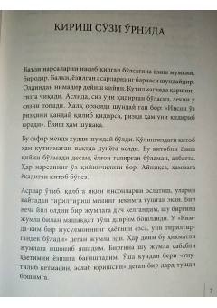

SSBuyuk olim Shamsiddin Sivasiy hayotini qayta tiriltirgan tarixiy roman.
Bu kitob Fotih Dumal tomonidan yozilgan bo'lib, buyuk olim va shoir Shamsiddin Sivasiy hayoti va ruhiy izlanishlarini tasvirlaydi. Muallif yillar davomida bu zot haqida o'qib, o'rganib, uni qayta tiriltirish maqsadida asarni yaratgan. Kitob tarixiy Sivas shahri va u yerda yashagan ulug' shaxsning ma'naviy dunyosini ochib beradi.